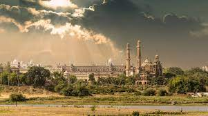

WELCOME TO MY UTTAR PRADESH TRAVEL BLOG !! I am AMAN ARYAN a software engineer who loves exploring the world . Join me on my journey to discover amazing destinations and cultures around the state. This blog will showcase my travel adventures , photography and insights from the road . I hope you enjoy following along on my trips near and far.
Welcome to Lucknow

Cultural Gem: Lucknow, city of Nawabs, embodies rich heritage and tradition.
Architectural Marvels: Majestic structures like Bara Imambara and Chota Imambara adorn its skyline.
Culinary Delights: Renowned for Awadhi cuisine, offering flavorful kebabs and aromatic biryanis.
Chikankari Hub: Famous for intricate Chikankari embroidery, a symbol of craftsmanship.
Gracious Hospitality: Known for 'tehzeeb' and 'adab', showcasing polite and refined manners.
Modern Hub: Balancing tradition with progress, thriving with industries and education.
Festival Celebrations: Vibrant festivities during Eid, Diwali, and Lucknow Mahotsav.
Historical Significance: Ancient capital of powerful Indian dynasties.
Welcome to Varanasi
Spiritual Epicenter: Varanasi, oldest living city, is a spiritual hub revered by Hindus worldwide.
Sacred Ghats: Banks of Ganges River adorned with ancient ghats for rituals and prayers.
Spiritual Practices: Witness enchanting Ganga Aarti ceremonies and sunrise boat rides.
Cultural Heritage: Cultural Heritage: Home to vibrant music, dance, and classical arts, including Benarasi silk weaving.
Eternal City: Varanasi's timeless charm, narrow lanes, and bustling markets offer an immersive cultural experience.
Education Center: Hub of learning, hosting renowned universities and institutions.
Global Attraction: Draws travelers seeking spiritual enlightenment, cultural immersion, and authentic experiences.
Welcome to Ayodhya
Holy City: Ayodhya, revered by Hindus, is an ancient pilgrimage site and birthplace of Lord Rama.
Ram Janmabhoomi: Famous for the Ram Janmabhoomi temple, believed to be the birthplace of Lord Rama.
Spiritual Significance: Sacred ghats along the Sarayu River offer spiritual rituals and prayers.
Historical Heritage: Boasts of ancient temples, including Hanuman Garhi and Kanak Bhawan.
Cultural Legacy: Ayodhya's rich mythology and festivals attract devotees and tourists year-round.
Peaceful Atmosphere: Tranquil ambiance, serene surroundings, and religious harmony define the city.
Global Interest: A focal point of religious and political discourse, Ayodhya draws attention worldwide.
Things to do in Lucknow
Explore Heritage: Visit Bara Imambara, Chota Imambara, and Rumi Darwaza for Nawabi architecture.
Cuisine Delights: Indulge in Lucknawi cuisine with kebabs, biryanis, and local sweets.
Chikankari Shopping: Shop for intricate Chikankari embroidery in markets like Hazratganj.
Kathak Experience: Witness a Kathak dance performance for a taste of classical art.
Heritage Walks: Discover the old city's history with guided heritage walks.
British Residency: Explore the ruins of the British Residency, a symbol of 1857 events.
Gomti River Boat Ride: Enjoy a serene boat ride on the Gomti River.
Things to do in Varanasi
Ganga Aarti: Witness the mesmerizing Ganga Aarti ceremony on Varanasi's ghats.
Boat Ride: Take a boat ride along the Ganges to witness daily rituals and life.
Temple Visits: Pay respects at Kashi Vishwanath, Sankat Mochan, and Durga Temples.
Sarnath Exploration: Explore Sarnath, where Buddha delivered his first sermon.
Banarasi Silk Shopping: Shop for Banarasi silk sarees renowned for their craftsmanship.
Yoga Retreats: Join yoga and meditation sessions offered by ashrams for inner peace.
Things to do in Ayodhya
Ram Janmabhoomi Visit: Pay homage at Ram Janmabhoomi temple, Lord Rama's birthplace.
Hanuman Garhi Exploration: Visit Hanuman Garhi temple known for its towering structure.
Kanak Bhawan Prayers: Offer prayers at Kanak Bhawan dedicated to Lord Rama and Sita.
Ram Leela Experience: Witness traditional Ram Leela performances during festivals.
Ayodhya Museum Tour: Explore Ayodhya's history and heritage at the local museum.
Sarayu River Cruise: Enjoy a leisurely boat cruise on the serene Sarayu River.
Festival Celebrations: Immerse yourself in the festive fervor during Ram Navami and Diwali.
About me
HELLO! My name is Aman Aryan!
I am thrilled to share my adventures and experiences with you through this blog. Having completed my B.Tech degree in Computer Science engineering at Galgotias University in 2023, I embarked on a journey fueled by my passion for exploration and discovery.
My love for travel runs deep, especially when it comes to unraveling the mysteries of my country's ancient history. Exploring the nooks and crannies of India, I've found inspiration in the vibrant culture, diverse landscapes, and fascinating stories that each region holds.
This blog serves as a platform for me to connect with fellow travelers who share my enthusiasm for exploration. Here, I'll be sharing insights, recommendations, and firsthand accounts of my adventures, hoping to ignite your wanderlust and spark your curiosity about the world around you.
Whether you're seeking travel tips, destination inspiration, or simply a virtual companion for your own journey, I invite you to join me as we embark on this exhilarating adventure together.
Together, let's dive into the beauty of our surroundings, immerse ourselves in new cultures, and create lasting memories that will enrich our lives forever.
Thank you for joining me on this exciting journey – I can't wait to explore the world with you!
Contact me
If you have any questions, suggestions, or just want to say hello, feel free to reach out to me using the contact form below:
.jpeg)
.jpeg)
.jpeg)
.jpeg)
.jpeg)